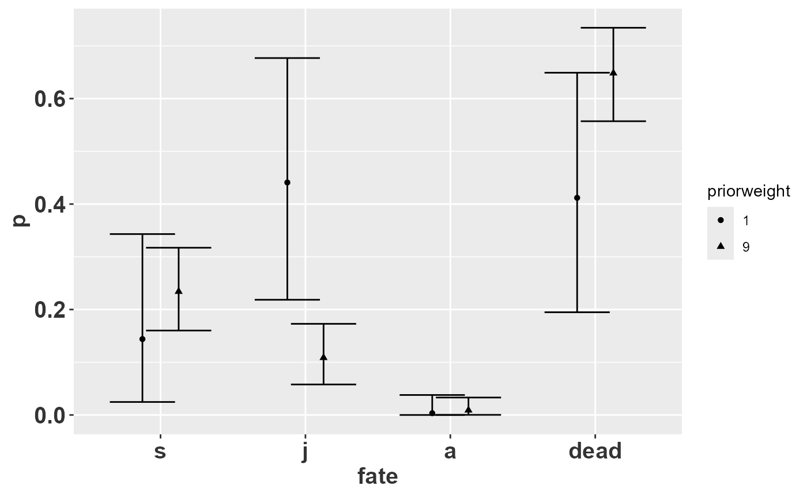
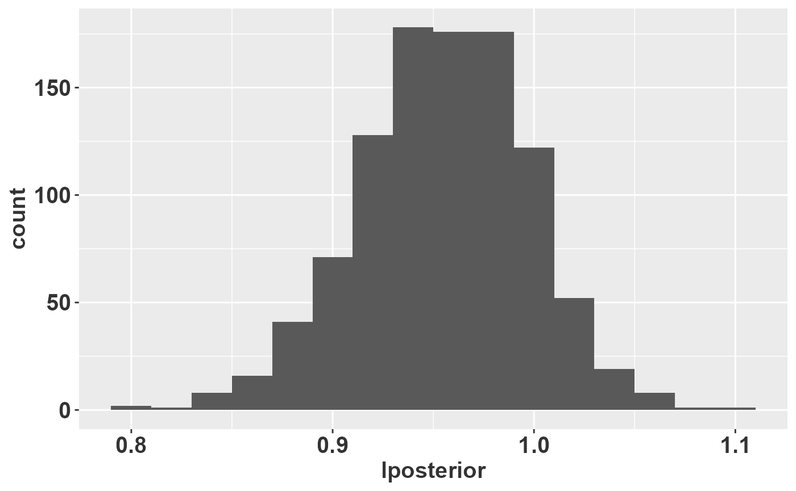
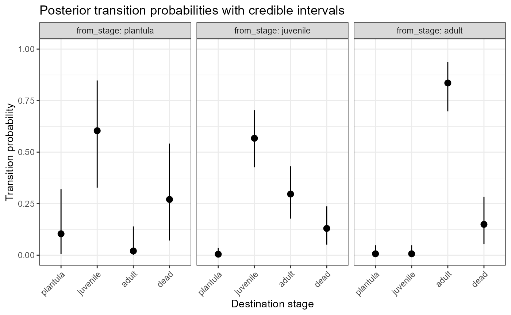

03 Working with a single population and transition
Source:vignettes/onepopperiod.Rmd
onepopperiod.Rmd
knitr::opts_chunk$set(echo = TRUE, tidy = TRUE)
library(dplyr)
library(purrr)
library(tibble)
library(ggplot2)
library(popbio) # for projection.matrix()
library(raretrans)
# Raymond's theme modifications
rlt_theme <- theme(axis.title.y = element_text(colour="grey20",size=15,face="bold"),
axis.text.x = element_text(colour="grey20",size=15, face="bold"),
axis.text.y = element_text(colour="grey20",size=15,face="bold"),
axis.title.x = element_text(colour="grey20",size=15,face="bold"))The goal of this vignette is to demonstrate the use of package
raretrans on a single population and transition period.
Part I: Obtaining the projection matrix
raretrans assumes the projection matrix is a list of two
matrices, a transition matrix and a fertility matrix. This is the output
format of popbio::projection.matrix. If we have individual
transitions in a dataframe we can use
popbio::projection.matrix to obtain the required data. We
demonstrate with the transition and fertility data for the epiphytic
orchid Lepanthes elto POPNUM 250 in
period 5.
Step 1: Load and munge the single population data for L. elto
## # A tibble: 6 × 13
## POPNUM year seedlings adults fertility IND_NUM stage next_stage first_year
## <dbl> <dbl> <dbl> <dbl> <dbl> <dbl> <chr> <chr> <dbl>
## 1 209 1 1 6 0 67 j j 1
## 2 209 1 1 6 0 68 a a 1
## 3 209 1 1 6 0 69 a a 1
## 4 209 1 1 6 0 70 a a 1
## 5 209 1 1 6 0 71 j a 1
## 6 209 1 1 6 0 72 a a 1
## # ℹ 4 more variables: last_year <dbl>, recruited <lgl>, died <dbl>,
## # lifespan <int>Each row of this dataframe has columns for current stage, the next stage, and average per individual fertility. Note that “p” stands from “plantula” which means “seedlings” in Spanish. The first set of lines below change the name of the life history stage from “p” to “s” after selecting the population and time period.
onepop <- L_elto %>%
# Filter out population # 250, period (year) 5
filter(POPNUM == 250, year == 5) %>%
# redefine p for el plantón to s for seedling
mutate(stage = case_when(stage == "p" ~ "s", TRUE ~ stage), next_stage = case_when(next_stage ==
"p" ~ "s", TRUE ~ next_stage))
# popbio::projection.matrix doesn't like tibbles set TF = TRUE to get the right
# format.
TF <- popbio::projection.matrix(as.data.frame(onepop), stage = stage, fate = next_stage,
fertility = "fertility", sort = c("s", "j", "a"), TF = TRUE)
TF # This is the stage-structured population model## $T
##
## s j a
## s 0.09090909 0.00000000 0.00000000
## j 0.63636364 0.57446809 0.00000000
## a 0.00000000 0.29787234 0.85294118
##
## $F
##
## s j a
## s 0.0000000 0.0000000 0.1176471
## j 0.0000000 0.0000000 0.0000000
## a 0.0000000 0.0000000 0.0000000Our stages are now coded as s (seedling),
j (juvenile), and a (adult), and we
now have two matrices: T (stage transition) and
F (fecundity). The observed asymptotic population
growth rate is
0.93. The rare transitions missing from our first transition matrix,
TF$T, are the transition from seedling (s) to
adult (a), and the transition from j to s.
But we know that these happen.
Step 2: Obtain starting number of individuals per stage
Since our priors are based on counts (number of individuals, N) and the prior equivalent sampling size is expressed as a multiple of the number of individuals observed, we need to obtain the number of individuals in each stage () at the first time period.
We use function raretrans::get_state_vector() to obtain
the starting individual count, N.
N <- get_state_vector(onepop, stage = stage, sort = c("s", "j", "a"))
N # A vector of # of starting individuals for each stage## [1] 11 47 34The list of matrices and vector of individual counts do not have to come from a dataframe as we’ve done here. As long as they have the expected format they can be created by hand. We use population 231 in period 2 as an example, splitting the matrix into transition T and fecundity F matrices. Below, “m” stands for “muerte” that is plants that are dead.
TF2## $T
## stage
## fate p j a
## p 0.5000000 0.0000000 0.0000000
## j 0.0000000 0.8333333 0.0000000
## a 0.0000000 0.0625000 0.8750000
##
## $F
## [,1] [,2] [,3]
## [1,] 0 0 0.125
## [2,] 0 0 0.000
## [3,] 0 0 0.000
N2## p j a
## 2 6 16This matrix is missing the transition from seedling to juvenile, and none of the 6 juveniles died leading to an overestimate of survival. The observed asymptotic population growth rate is 0.88. The matrix is not Ergodic (you can’t get to every other state from one or more states), and reducible, meaning one or more columns and rows can be discarded and have the same eigen properties.
Part 2: Using priors to incorporate rare transitions
Use uninformative priors
Tremblay et al (in prep) show that a dirichlet prior works on the columns of the transition matrix (T), and a gamma prior works for entries in the fecundity matrix F.
Transition matrix
So, let’s add a uniform dirichlet prior with weight = to the transition matrix, . Here, we have 4 fates (3 + death), so each fate adds 0.25 to the matrix of observed fates (not the transition matrix!). When we specify a prior matrix for the transitions, there is one more row than columns. This extra row represents death.
Tprior <- matrix(0.25, byrow = TRUE, ncol = 3, nrow = 4)
fill_transitions(TF, N, P = Tprior) # returns transition matrix by default## [,1] [,2] [,3]
## [1,] 0.10416667 0.005208333 0.007142857
## [2,] 0.60416667 0.567708333 0.007142857
## [3,] 0.02083333 0.296875000 0.835714286We can get the same result ‘by hand’ - we need the vector of observations because the posterior is calculated from the observed transitions, not the transition matrix.
Tobs <- sweep(TF$T, 2, N, "*") # get the observed transitions
Tobs <- rbind(Tobs, N - colSums(Tobs)) # add the mortality row
Tobs <- Tobs + 0.25 # add the prior
sweep(Tobs, 2, colSums(Tobs), "/")[-4, ] # divide by the column sum, and discard mortalityrow## s j a
## s 0.10416667 0.005208333 0.007142857
## j 0.60416667 0.567708333 0.007142857
## a 0.02083333 0.296875000 0.835714286The uniform prior fills in the missing transitions, but also creates problems because it provides transition values that are biologically impossible. For example, it provides a transition for adult->seedling, when this transition is only possible in the fecundity matrix . For this reason we do not recommend using uniform priors.
Fertility matrix
We must specify the parameters for the fertility prior as a matrix.
Entries representing stages that are non-reproducing or outcome stages
that don’t occur by reproduction should be NA.
alpha <- matrix(c(NA_real_, NA_real_, 1e-05, NA_real_, NA_real_, NA_real_, NA_real_,
NA_real_, NA_real_), nrow = 3, ncol = 3, byrow = TRUE)
beta <- matrix(c(NA_real_, NA_real_, 1e-05, NA_real_, NA_real_, NA_real_, NA_real_,
NA_real_, NA_real_), nrow = 3, ncol = 3, byrow = TRUE)
fill_fertility(TF, N, alpha = alpha, beta = beta)##
## s j a
## s 0.0000000 0.0000000 0.1176473
## j 0.0000000 0.0000000 0.0000000
## a 0.0000000 0.0000000 0.0000000The change in the fertility is < 0.0001 compared to the observed value. Calculating by hand, prior alpha is the number of observed offspring, and prior beta is the number of observed adults.
obs_offspring <- N[3] * TF$F[1, 3]
prior_alpha <- 1e-05
prior_beta <- 1e-05
posterior_alpha <- obs_offspring + prior_alpha
posterior_beta <- N[3] + prior_beta
posterior_alpha/posterior_beta # expected value## [1] 0.1176473This demonstrates why the posterior point estimate of fecundity does not change much; the non-informative values for and barely change the observed values.
Now we can put them together.
unif <- list(T = fill_transitions(TF, N), F = fill_fertility(TF, N, alpha = alpha,
beta = beta))
unif## $T
## [,1] [,2] [,3]
## [1,] 0.10416667 0.005208333 0.007142857
## [2,] 0.60416667 0.567708333 0.007142857
## [3,] 0.02083333 0.296875000 0.835714286
##
## $F
##
## s j a
## s 0.0000000 0.0000000 0.1176473
## j 0.0000000 0.0000000 0.0000000
## a 0.0000000 0.0000000 0.0000000The asymptotic population growth rate is now 0.92. The growth rate shrinks slightly because applying the uniform prior to the transition probabilities causes the observed growth and survival transitions to shrink slightly relative to the unobserved transitions.
Other options for argument returnType
By default fill_transitions() returns the transition
matrix
,
and fill_fertility() returns the fertility matrix
.
There are three other values that the argument returnType
can take:
-
fill_transitions(... returnType = "TN")can return an augmented matrix of fates, which is useful for simulation. The fourth row of this result (see below) is the mortality state.
fill_transitions(TF, N, returnType = "TN")## [,1] [,2] [,3]
## [1,] 1.25 0.25 0.25
## [2,] 7.25 27.25 0.25
## [3,] 0.25 14.25 29.25
## [4,] 3.25 6.25 5.25-
fill_fertility(... returnType = "ab")returns the alpha and beta vectors of the posterior.
fill_fertility(TF, N, alpha = alpha, beta = beta, returnType = "ab")## $alpha
##
## s j a
## s 4.00001
## j
## a
##
## $beta
## [,1] [,2] [,3]
## [1,] NA NA 34.00001
## [2,] NA NA NA
## [3,] NA NA NA- Both functions can also return the full matrix, the sum of and .
fill_transitions(TF, N, returnType = "A")##
## s j a
## s 0.104166667 0.005208333 0.124789916
## j 0.604166667 0.567708333 0.007142857
## a 0.020833333 0.296875000 0.835714286Incorporate informative priors
To fix the problem of creating impossible transitions, we specify a more informative prior elicited from an expert on epiphytic orchids (RLT). It still has to have the same shape, one more row than columns.
RLT_Tprior <- matrix(c(0.25, 0.025, 0, 0.05, 0.9, 0.025, 0.01, 0.025, 0.95, 0.69,
0.05, 0.025), byrow = TRUE, nrow = 4, ncol = 3)Note that the 1st row, 3rd column is 0.0, because this transition is impossible. This prior is constructed so the columns sum to 1, which creates the greatest flexibility for weighting the prior. By default the weight is 1, interpreted as a prior sample size of 1.
fill_transitions(TF, N, P = RLT_Tprior)## [,1] [,2] [,3]
## [1,] 0.1041666667 0.0005208333 0.0000000000
## [2,] 0.5875000000 0.5812500000 0.0007142857
## [3,] 0.0008333333 0.2921875000 0.8557142857We can specify the weight as a multiple of the sample size for each stage.
fill_transitions(TF, N, P = RLT_Tprior, priorweight = 0.5)## [,1] [,2] [,3]
## [1,] 0.143939394 0.008333333 0.000000000
## [2,] 0.440909091 0.682978723 0.008333333
## [3,] 0.003333333 0.206914894 0.885294118Here the prior is weighted half as much as the observed number of transitions. In this case, with only 2 transitions the prior effective sample size is still 1. If the number of observed transitions was larger, a prior weight of 0.5N would be larger than 1, but still allow the data to dominate.
Part 3: Obtain Credible Intervals
Obtain CI for indvidual matrix entries
The marginal posterior distribution of one element in a multinomial is a beta distribution, and we use this to get credible intervals on our transition rates. We can use the TN return type to get the parameters of the desired multinomial.
TN <- fill_transitions(TF, N, P = RLT_Tprior, priorweight = 0.5, returnType = "TN")
a <- TN[, 1] # change 1 to 2, 3 etc to get marginal distribution of other columns
b <- sum(TN[, 1]) - TN[, 1] # change 1 to 2, 3 etc to get marginal distribution of other columns
p <- a/(a + b)
lcl <- qbeta(0.025, a, b)
ucl <- qbeta(0.975, a, b)
knitr::kable(sprintf("%.3f (%.3f, %.3f)", p, lcl, ucl))| x |
|---|
| 0.144 (0.025, 0.343) |
| 0.441 (0.218, 0.677) |
| 0.003 (0.000, 0.038) |
| 0.412 (0.195, 0.649) |
Those are the point estimates (compare with first column above),
lower and upper
symmetric credible intervals for transitions out of the seedling stage.
There is a high degree of uncertainty because of the small sample size
(),
and low weight on the prior
(),
leading to an effective sample size of 3. If we increase the effective
sample size to
by specifying:
priorweight
the symmetric credible intervals shrink quite a bit:

The transition rate from seedling to juvenile shrinks when the prior sample size is too large. In general the prior sample size should be less than the observed sample size.
Interactive Exploration: To visually test the effects of differing prior weights and explore posterior probability densities without writing code, you can launch the interactive Shiny app using
raretrans::run_app().
Credible intervals on
Obtaining credible intervals on the asymptotic growth rate,
,
requires simulating matrices from the posterior distributions. This is
somewhat complicated to do correctly, and we have written a function
raretrans::sim_transitions() to generate a list of
simulated matrices given the observed matrix and prior
specifications.
sim_transitions(TF, N, P = RLT_Tprior, alpha = alpha, beta = beta, priorweight = 0.5)## [[1]]
## [,1] [,2] [,3]
## [1,] 3.497222e-02 0.02485117 0.380322419
## [2,] 3.442645e-01 0.66156648 0.000610186
## [3,] 3.485163e-07 0.20367886 0.966110690Now we simulate 1000 times, calculate the leading eigenvalue of each matrix, and draw a histogram.
set.seed(8390278) # make this part reproducible
alpha2 <- matrix(c(NA_real_, NA_real_, 0.025, NA_real_, NA_real_, NA_real_, NA_real_,
NA_real_, NA_real_), nrow = 3, ncol = 3, byrow = TRUE)
beta2 <- matrix(c(NA_real_, NA_real_, 1, NA_real_, NA_real_, NA_real_, NA_real_,
NA_real_, NA_real_), nrow = 3, ncol = 3, byrow = TRUE)
# generate 1000 matrices based on the prior transitions and fertilities plus
# the data
RLT_0.5 <- sim_transitions(TF, N, P = RLT_Tprior, alpha = alpha2, beta = beta2, priorweight = 0.5,
samples = 1000)
# extract the lambdas for each matrix
RLT_0.5 <- tibble(lposterior = map_dbl(RLT_0.5, lambda))
ggplot(data = RLT_0.5, mapping = aes(x = lposterior)) + geom_histogram(binwidth = 0.02) +
rlt_theme
We can calculate some summary statistics too. pincrease
is the probability that
.
RLT_0.5_summary <- summarize(RLT_0.5, medianL = median(lposterior), meanL = mean(lposterior),
lcl = quantile(lposterior, probs = 0.025), ucl = quantile(lposterior, probs = 0.975),
pincrease = sum(lposterior > 1)/n())
knitr::kable(RLT_0.5_summary, digits = 2)| medianL | meanL | lcl | ucl | pincrease |
|---|---|---|---|---|
| 0.96 | 0.95 | 0.87 | 1.03 | 0.13 |
cri <- transition_CrI(TF, N, stage_names = c("plantula", "juvenile", "adult"))
plot_transition_CrI(cri)